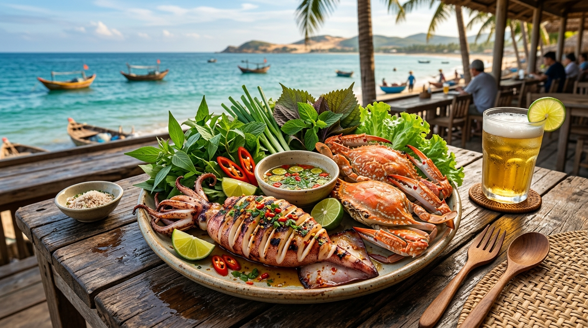

The Majestic Wonder
Welcome to our presentation! Discover the breathtaking emerald waters and thousands of towering limestone islands of Ha Long Bay, Vietnam.
Welcome to our presentation! Discover the breathtaking emerald waters and thousands of towering limestone islands of Ha Long Bay, Vietnam.
Scroll Down
Ha Long Bay is located in Quang Ninh province, in the north of Vietnam. It is renowned for its emerald green waters and over 1,600 limestone islands and islets.

Relax on a traditional junk boat and sail through the majestic limestone islands.

Get up close to the limestone cliffs and paddle through hidden lagoons and caves.

Walk inside massive caves like Sung Sot (Surprise Cave) filled with amazing stalactites.
Because Ha Long Bay is next to the sea, the seafood here is exceptionally fresh and delicious. You can enjoy local specialties like squid, crab, and various fish dishes.
Visit the traditional floating villages to see how local fishermen have lived on the water for generations. The people are incredibly friendly and welcoming.



We hope you enjoyed our journey through Ha Long Bay.
Do you have any questions?
© 2026 Ha Long Bay Presentation Team.